Distribution of Regions of Origins for FTAs
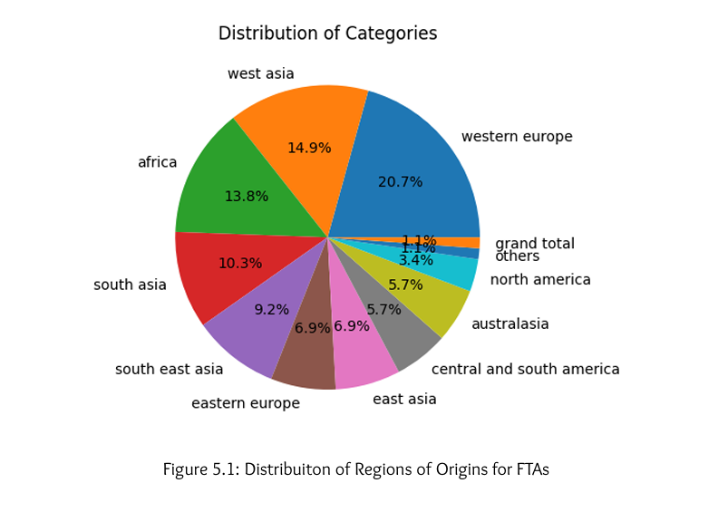Add: images/regional_distribution.png
'">
Western Europe and West Asia dominate India's tourism landscape, contributing the largest share of foreign visitors.
Distribution of FTAs by Age Groups
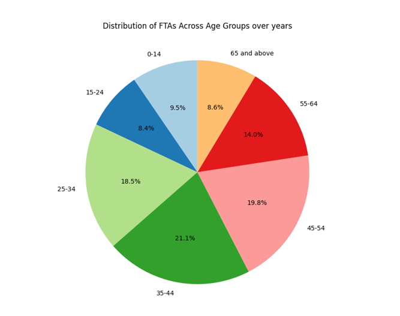Add: images/age_distribution.png
'">
Middle-aged adults (25-54 years) represent the largest demographic of tourists visiting India, reflecting higher travel frequency and disposable income.
Quarterly Distribution of 21st Century FTAs
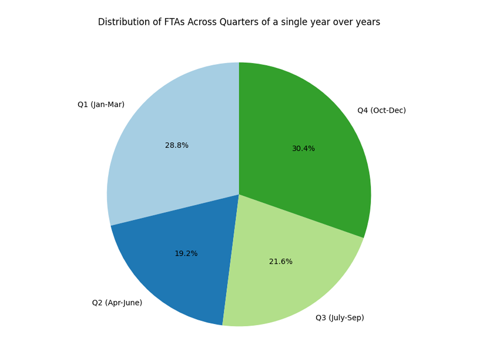Add: images/quarterly_trends.png
'">
Tourist arrivals peak dramatically in Q4 (October-December), showcasing strong seasonal demand patterns driven by favorable weather and festivals.
FTA Trends by Region
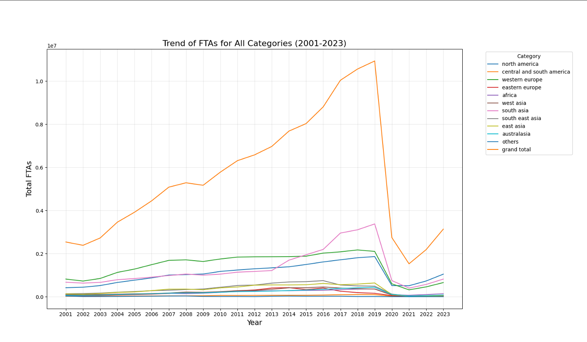Add: images/regional_trends.png
'">
All regions show steady growth until 2020, when COVID-19 caused a sharp decline, followed by gradual recovery in subsequent years.
Missing Data Pattern Analysis
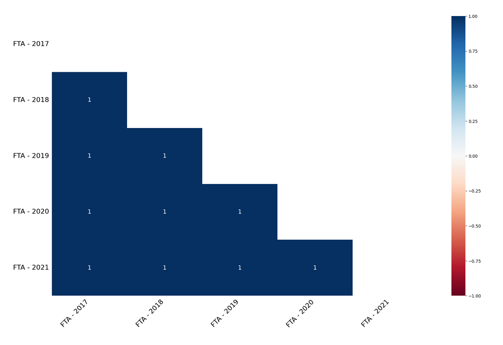Add: images/missing_data.png
'">
Missing data shows a systematic pattern, primarily concentrated in recent years (2017-2021) for specific countries.
FTA Outlier Detection Analysis
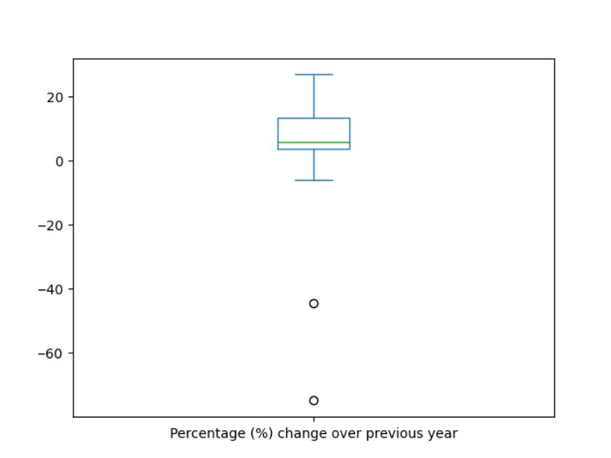Add: images/outlier_analysis.png
'">
Consistent outliers represent countries with exceptionally high tourist arrivals, particularly from neighboring regions with visa-free access.
Correlation Heatmap of FTA Data
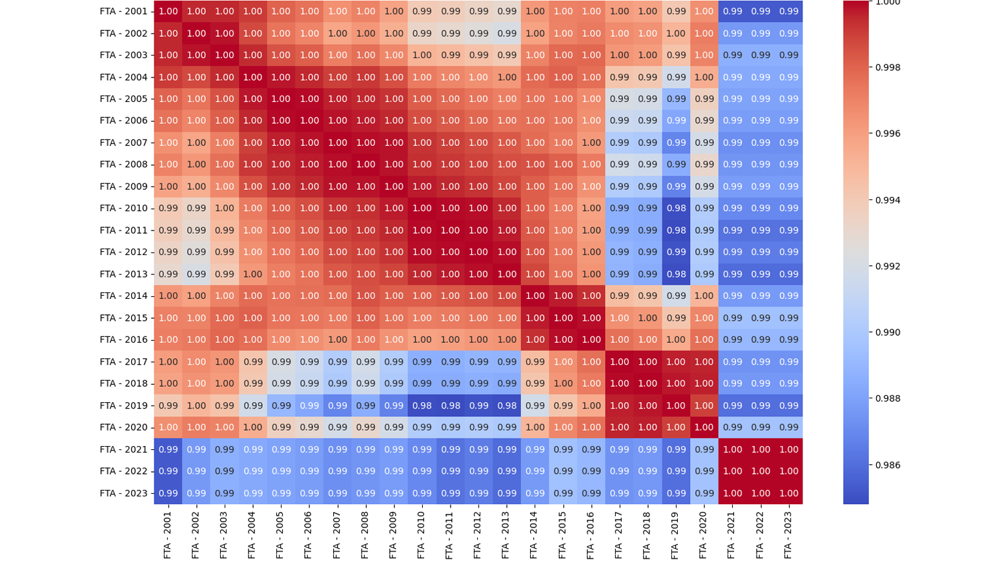Add: images/correlation_heatmap.png
'">
Strong positive correlations across years indicate consistent growth patterns and temporal dependencies in tourism data.
FTAs vs India's Global Tourism Share
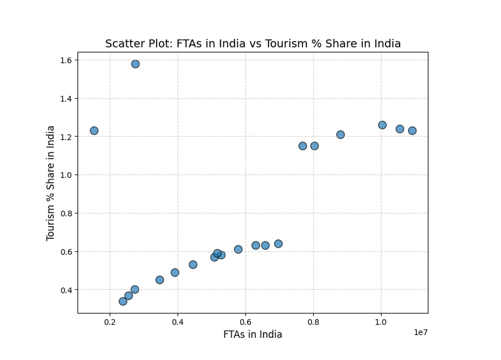Add: images/fta_vs_share.png
'">
Higher foreign tourist arrivals directly translate to increased global tourism market share for India, demonstrating sector competitiveness.
FTAs vs India's Global Tourism Rank
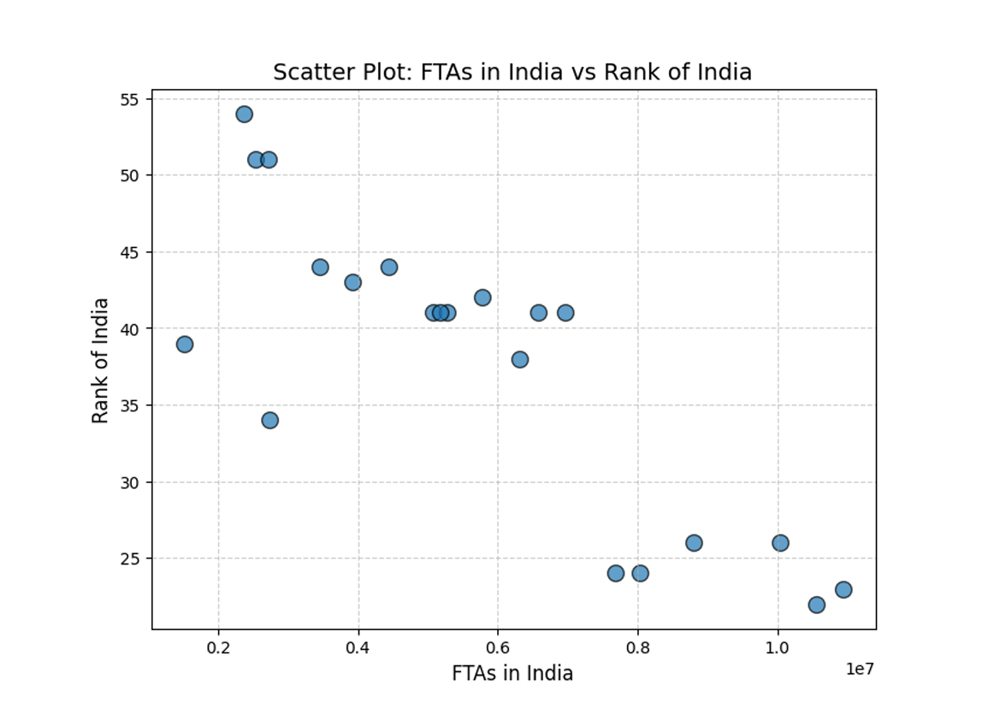Add: images/fta_vs_rank.png
'">
As tourist arrivals increase, India achieves better rankings in global tourism competitiveness indices.
Foreign Exchange Earnings vs Tourism Share
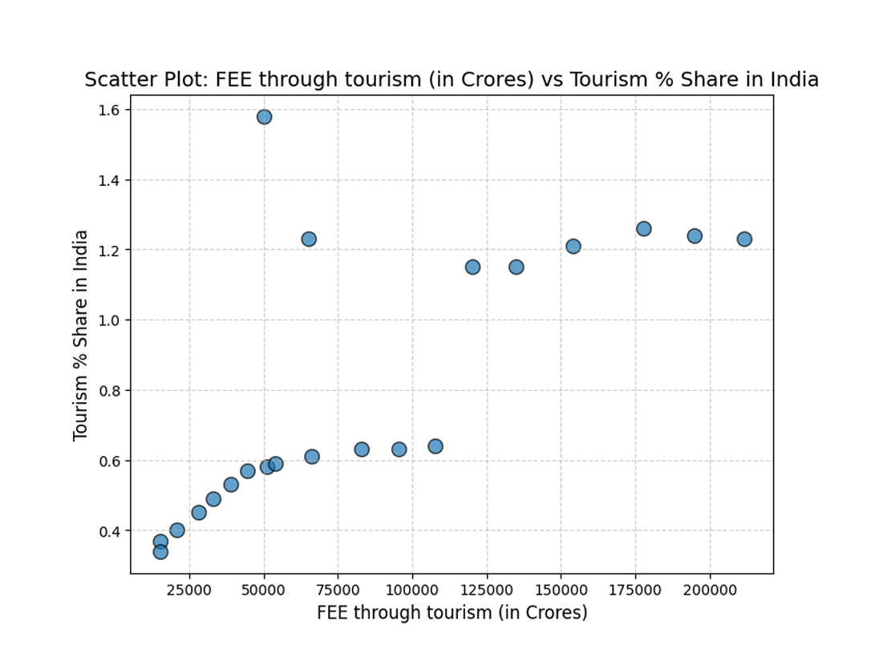Add: images/fee_vs_share.png
'">
Foreign exchange earnings from tourism show strong positive correlation with India's global tourism market share.
Foreign Exchange Earnings vs Global Rank
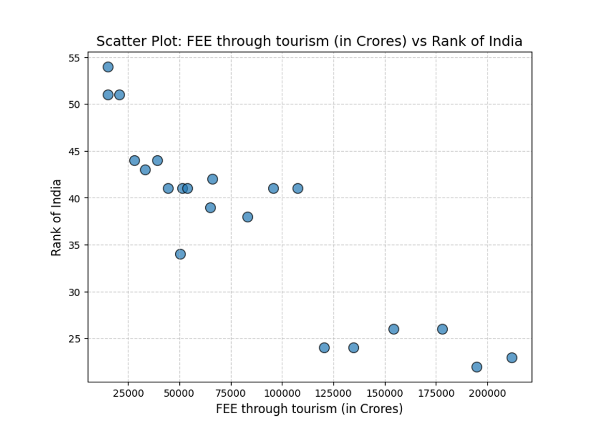Add: images/fee_vs_rank.png
'">
Higher foreign exchange earnings consistently align with better global tourism rankings, indicating economic impact.
Global Distribution of Tourist Origins
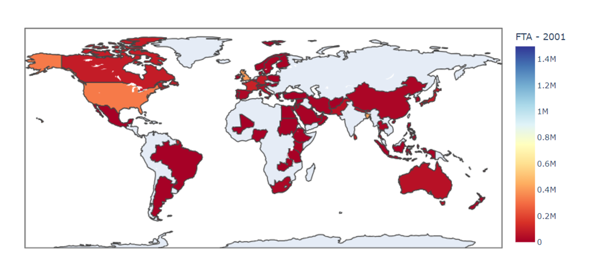Add: images/world_map.png
'">
The global map reveals concentrated tourist flows from Western Europe, West Asia, and North America, highlighting key target markets for India's tourism strategy.